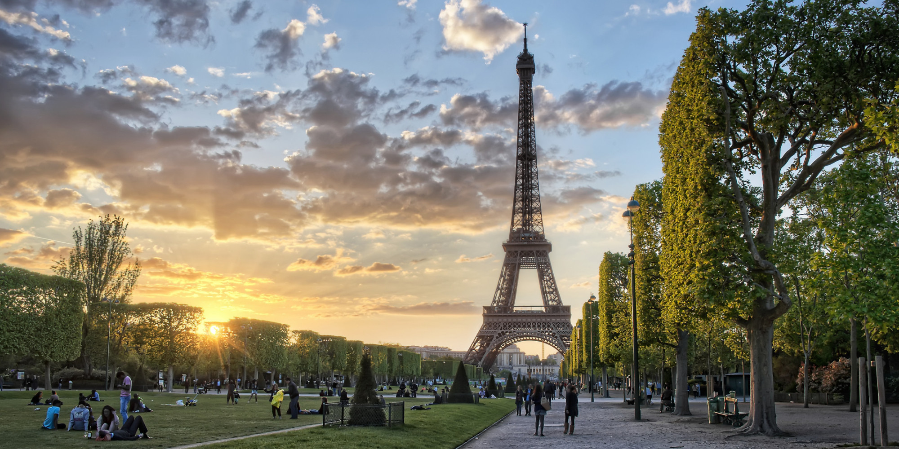
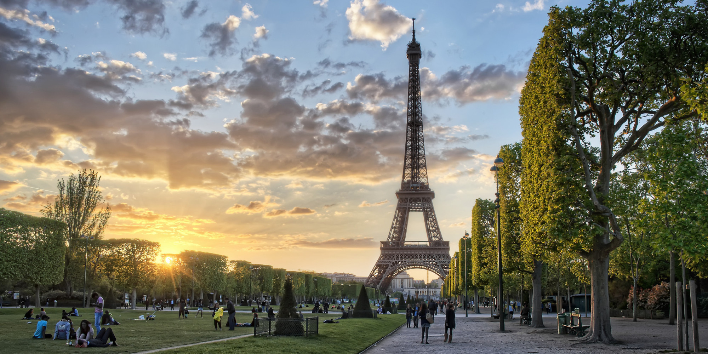

Paris est la capitale de France et la ville la plus peuplée. Surnommée à la fois la « Ville Lumière » et la « Ville de l’Amour », cette destination européenne à couper le souffle abrite l’emblématique Tour Eiffel. Paris, située le long de la Seine, est connue dans le monde entier pour de nombreuses raisons, notamment son architecture, sa mode, sa gastronomie et ses joyaux culturels. Il attire environ 15,5 millions de visiteurs internationaux par an. Les monuments célèbres de Paris incluent la Tour Eiffel, l’Arc de Triomphe, le Champ de Mars, le Louvre, Notre-Dame, les Catacombes de Paris, le Palais du Luxembourg, le jardin des Tuileries, le Quartier Latin, la Basilique du Sacré-Cœur de Paris et Disneyland Paris
 

TOUR EIFFEL
Projet html